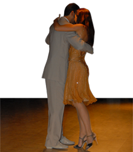

El Tango nació como danza social
El Tango nació como danza social, con el objeto de posibilitar el acercamiento entre hombres y mujeres, permitiendo un contacto sutil entre ellos. Aunque tiene, por un lado, la placentera atmósfera de la gente que está disfrutando, por el otro lado, tiene un regusto a nostalgia de inmigrantes y de pobres gauchos que no encuentran un lugar que considerar “hogar”. Tiene también una remembranza del hombre solo en Argentina que añora el contacto femenino. Por ello, el abrazo del Tango tiene la cualidad de conectar a dos seres humanos, de una manera profunda y en cierta actitud protectora y de cuidado mutuo
En este sentido, los resultados de algunos estudios revelan que las caricas sutiles y el estrechar de manos generan un incremento en los niveles de oxitocina, el cual contribuye a dilatar las arterias y disminuir la presión sanguínea. Todo esto produce un estado mental positivo que ayuda a combatir la ansiedad y el esters. (Peidro, R., 2007)
Dada la peculiaridad del ambrazo (que tiene una reminiscencia del abrazo maternal) la danza del Tango se ha encontrado también provechosa en el tratamiento del trauma. Más aún, el Tango se baila circulando en la pista en sentido inverso alas agujas del reloj, y ese movimiento circular de un grupo de personas genera una energía particular que recuerda a danzas ancestrales de muchas culturas, donde ese círculo mítico tenía un sentido de pertenencia y protección.
Más allá de ese maravilloso sentimiento de union con el otro, de apertura y confianza, el Tango está ligado por su propia naturaleza a la idea de “entender al otro”, ya que no se podría bailar si no hubiese alguien que lidera el movimiento y alguien que acompaña. Ambos deben entenderse mutuamente, por ejemplo, el hombre tiene que comprender si la mujer está lista para comenzar el movimiento, en qué pie tiene el peso del cuerpo, si está en eje o no. La mujer, en cambio, debe comprender cuando moverse, cuán rápido, en que dirección, etc. El Tango presupone un diálogo de dos cuerpos donde los roles están claramente definidos. Esta cualidad hace que el Tango sea particularmente útil para personas que tienen problemas para confiar en otros, en la toma de decisions y tambien en cuanto a “lidear” sus propias vidas.
Tango ha sido utilizado como Terapia Complementaria
Gracias a sus especiales características, el Tango ha sido utilizado como terapia complementaria en el tratamiento de desórdenes psicológicos severos como: Fobia Social, Depresión, Trauma e inclusi Esquizofrenia.(Trossero, F., 2006) En general es de gran ayuda en terapias de parejas y deproblemas relacionales.
El Tango es una danza que la gente de todas las edades puede disfrutar. Es además un buen ejercicio ya que reúne los beneficios de caminar con un alto grado de coordinación, equilibrio y sincronización dentro de la pareja y con la música. Por ello ha sido usado como método terapéutico con pacientes con Parkinson, con los cuales ha probado ser aún más efectivo que los ejercicios típicos que aplican los fisioterapeutas. (Hackney, ME., 2009)
Por la misma razón ha sido empleado con éxito con ancianos, con el fin de aydarles a mejorar el equilibrio y la coordinación. (McKinley, P., 2005). Más aún, recordar complicadas series de pasos y movimientos de Tango se ha comprobado que ayuda a pacientes con Alzheimer.
De gran importancia es la observación de que bailar Tango ayuda a mejorar la salud cardíaca. Se han realizado al respecto amplias investigaciones (por ejemplo, en la fundación Favaloro) que han confirmado que el baile del Tango tiene un efecto positivo sobre la arteriosclerosis. No solo porque es un buen ejercicio, sino también porque el movimiento con la activación mental e incluso hormonal. Dr. Peidro ha dicho al respecto que : “ el Tango implica una actividad física y se relaciona con emociones positivas …todas las circunstancias que llevan a situaciones y momentos de alegría influyen como ‘emociones positivas’ que posibilitan vivir más y mejor.” (Peidro, R., 2007)
Inner Tango es una Técnica Terapéutica

InnerTango es particularmente recommendable para profundizar el conocimiento personal, para reconstruir una sana conección con nuestro cuerpo y para explorar emociones. También se recomienda como terapia complementaria para desórdenes psicológicos como problemas relacionales, dolores psicosomáticos y manejo del estrés.
InnerTango es a la vez una actividad placentera y una técnica terapéutica que promueve el crecimiento personal a través de la profundización de la conciencia corporal y de la expression de estados internos provocados por la danza de pareja. Combina elementos de la música y danza del Tango, el trabajo corporal y de la técnica experiencial del Focusing.
Es una manera de acceder a los significados internos, ocultos en el cuerpo, de nuestras experiencias de vida y de la forma en que nos relacionamos con los demás, en particular, con aquellos del sexo opuesto. Entendiendo mejor estos significados y aceptando sus verdades es como podemos, eventualmente, si es eso lo que deseamos, modificarlos.
InnerTango es además, un instrumento óptimo para desarrollar un sentido más equilibrado de uno mismo, ya que posibilita el trabajo con los ejes corporales y con los mecanismos internos de nuestra fortaleza y autoestima.
Todo esto inspirado por la belleza de la música del Tango, que ya de por sí provee el ambiente y estímulos adecuados para adquirir un sentido harmónico en nuestro interior, con la música, con nuestro partener y con el mundo que nos rodea.